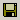

There are simple tasks to handle with files like opening a new file, opening an existing file and saving modified file.
To open a new file simply click on New file button located at the tool bar or from menu combination File -> New .
To open an existing file click on Open File button or access open file dialog window from File -> Open menu. On dialog window find file to open and click Open button.
Before opening any file program prompts to save changes made on an existing file if there are such.
To save file click on

Save button or click on File -> Save File menu. For saving file with different name click on File -> Save as menu. On opened dialog window write file name you wish to give to file and click Save button.To save image of designed circuit select File -> Save as menu and select suitible image filetype from Dialog box.